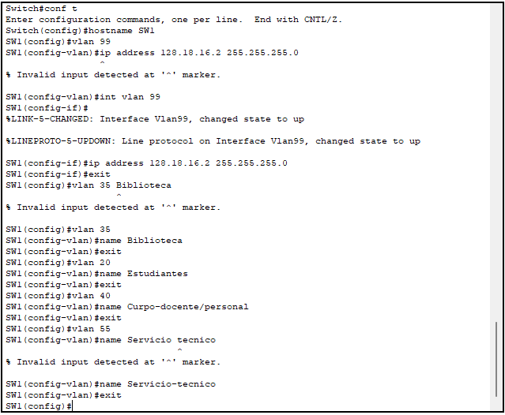
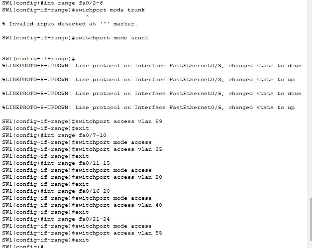

first we need to get the ip address for the devices from the Ip 128.18.0.0/16 with subnet of class B= 255.255.0.0 we then need we need to establish how many users each vlans need. we do this by checking the document given where it states Vlans 35,20,40 need 950 users/hosts Vlans 99 and 55 need 254 users/hosts we then convert the subnet mask into binary which is 255.255.0.0 = 1111111.11111111.00000000.00000000 and then convert the amount of hosts into binary so we know how many host pits we need as we see 950= 1110110110 =10 host bits and 254= 11111110 = 8 host bits from here we can find the new subent mask for the 950 users and 254 users witch 950 ip new subnet would be 1111111.11111111.11111100.00000000 = 255.255.252.0 which now we can see the increment and range for each subnet by checking the position of the last one which is in the position that equal 4 or we do 256-252= 4 now this gives the subnets for each vlan of 950 users which are Vlan 20 rango = 128.18.4.0-128.18.7.255 Vlan 35 rango = 128.18.8.0-128.18.11.255 Vlan 40 rango = 128.18.12.0-128.18.15.255 and the same happend with 254 ip new subnet would be 1111111. 1111111. 1111111. 00000000 255.255.255.0 and the last bit 1 is in the 1 part so the increment is by 1 /256-255= 1 so the subnet is Vlan 99 =128.18.16.0-128.18.16.255 Vlan 55 =128.18.17.0-128.18.17.155

For making this lab we make use of the structured cabling activity from previos class to serve as a base for the lab


now that we are here we then start in maiking the logical toplogy to due this we use the devices listed as in PC 0-11 swtitches 1-4 and router 1 to connect the diffrent racks we make use of the the patch panels of interconecion to connect the switches together aswell as the pcs


at this step we now move to the first step is to assign ip addresses to each of the devices on the network and use do it acording to the ips listed above how this is done is diffrent between the 2 devices with the pc is is simply go to the dextop->ipconfiguration tab and then put in the details (see below image) for switches its diffrent. the first step is to go to the command line interface in there we then put the command "enable" and the the command "configure terminal" this now allows us to edit the properties of the switch. we then put the command "vlan 99" so now we switch to the vlan portion and then put "interfate/int vlan 99" so now we are directly editing the vlan 99 we then put "ip address" which we then put the asigned ip and the subnet mask we can then use the command "exit" and use the command "ip default-gateway" to set the gateway and it is now set to later verify we just put "show vlan" and itll appear

after this we now need to setup the other vlan on the switch how its done is quite simple as we simply have to do what we did before and use the code "vlan x" x bieng the vlan we are going to do after that we use "name" and then asign a name to the vlan. now that we have that we then use then assign the switch ports according to the table to due this we enter the "configure terminal" we then use the command "interface range fa/x-x" x being the number of the port after that we use the command "switchport mode trunk/access" this sets what sort of role the port uses. the next one we use is "switchport access vlan" where we then assign it to a vlan
now in this part we can now setup the ability to do inter vlan comunication where we use the router as a way to comunicate we do this with encapsulation where we create subnets on the router using the "interface with fa0/0.x" x being the subnet/vlan so like 20,55 in our case then we use the "encapsulation dot1Q x" x being the vlan we want and then we assign an ip address while interfacing witht the required subnet. than we use the dot1Q encapsulation on the diffrent ports to get subnets we then asign the ip address wich is the default gateway of the other devices and then we have inter vlan comunication